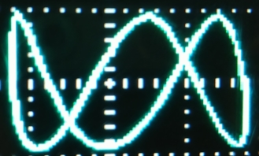
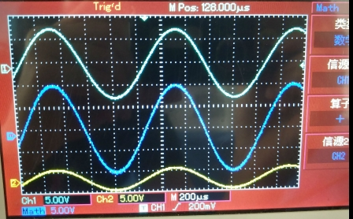
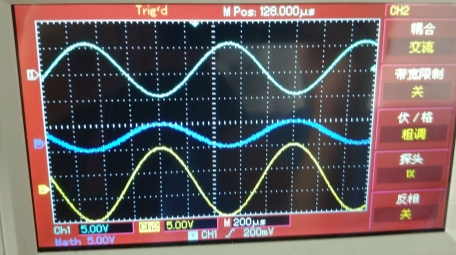
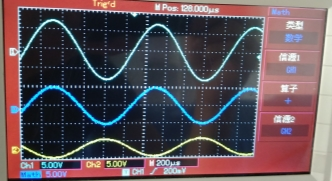

一、实验仪器：
1、(3分)以下不属于示波器的主要功能的是（ ）
A、显示信号随时间的变化
B、测量信号强度
C、测量信号周期
D、校正信号
2、(3分)示波器是常见的电学测量仪器之一，凡是能转化成（ ）信号的电学量和非电学量都可以用示波器来观察.
A、正弦
B、余弦
C、电压
D、以上全部
二、实验目的：
1、(3分) 以下哪项不属于本实验的实验目的（
）
A、了解示波器的结构和工作原理，学会正确使用示波器
B、掌握用示波器观察波形、测量电压和频率
C、了解用示波器测量两列波的相位差
D、掌握观察李萨如图形的方法
E、观察示波器两通道信号的同步关系
三、实验原理：
1、(3分)为了显示Y方向的信号随时间的变化过程，必须给X轴偏转板加（
）
A、电压
B、正弦波
C、方波
D、锯齿波
2、(3分)李萨如图形的\(f_{x}=1000hz\)，\(N_x : N_y ={3:2}\),则\(f_y =\)( )
A、2000 HzC、500 Hz
D、666 Hz
A、正弦波
B、三角波
C、锯齿波
D、方波
4、(4分）示波器显示的李萨如图如下所示，请问从图中可以看出x通道和y通道信号的频率比为 \(f_x : f_y =\) : ;

5、(6分）下图中通道1信号的电压峰峰值是 伏，通道1和2两个信号相加之后的合成信号电压峰峰值是 伏。

6、（6分）下图中如果通道1的相位为0，则通道2的相位为 (填写数字) 合成信号的相位为 (填写数字)。

7、（4分）下图中合成信号的周期是 (填写数字)

四、实验内容及数据处理
| 信号源 | 峰峰值\(V_p-_p\) | 周期T | 频率F | |||||||
|---|---|---|---|---|---|---|---|---|---|---|
| 垂直偏转灵敏度V/div | 垂直方向所占格数div | 电压峰峰值V/div*div | 示波器示数V | 水平扫描速度us/div | 水平方向所占格数div | 周期us/div*div | 示波器示数us | 计算值（1/T）Hz | 示波器示数Hz | |
| 15v 500 Hz | ||||||||||
| 10v 1k Hz | ||||||||||
(根据结果评分：每空1分，共12分)
| 频 率 比 | 1:1 | 2:1 | 3:2 | 1:2 | |
|---|---|---|---|---|---|
| 频 率 | CH1 | 1000 Hz | 2000 Hz | 1500 Hz | 500 Hz |
| CH2 | 1000 Hz | 1000 Hz | 1000 Hz | 1000 Hz | |
| 相位差 \(\Delta \varphi \) | 0 | ||||
| 45 | |||||
| 90 | |||||
| 180 | |||||
| 切点数比 \(n_x/n_y\) | |||||
| 频率比和切点数之比的关系为： （ ） A相同 B反比C相反数 | |||||
（每个空2分，共10分）
| 相 位\(\varphi\) | 频 率HZ | 电压V | 波 形 图 | |
|---|---|---|---|---|
| CH1 | 0 | 1000 | 5 | 请选择下图中哪 个选项 符合示波 器上显示的波形 |
| CH2 | 0 | 1000 | 10 | |
| 合 成 |
| 相 位\(\varphi\) | 频 率HZ | 电压V | 波 形 图 | |
|---|---|---|---|---|
| CH1 | \(\pi\) | 1000 | 5 | 请选择下图中哪 个选项 符合示波 器上显示的波形 |
| CH2 | 0 | 1000 | 10 | |
| 合 成 |